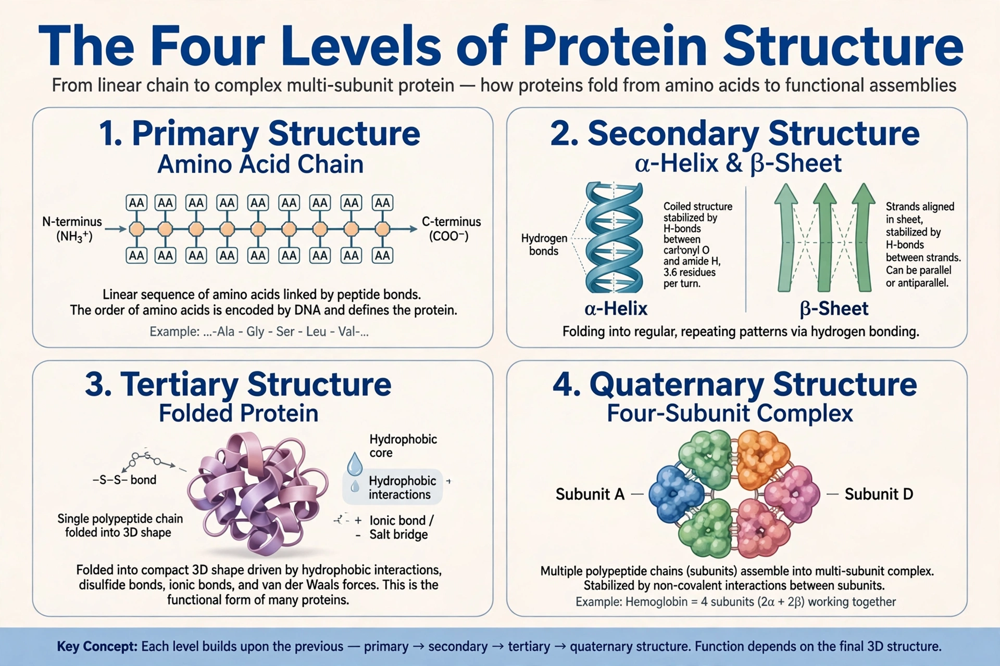

From Wikipedia, the free encyclopedia
Protein structure is the three-dimensional arrangement of atoms in an amino acid-chain molecule. Proteins are polymers — specifically polypeptides — formed from sequences of amino acids, which are the monomers of the polymer. A single amino acid monomer may also be called a residue indicating a repeating unit of a polymer.

The primary structure of a protein refers to the sequence of amino acids in the polypeptide chain, held together by peptide bonds. It is determined directly by the gene encoding the protein.
Secondary structure refers to highly regular local sub-structures — principally the alpha helix and the beta strand/sheet — stabilised by hydrogen bonds between backbone atoms. The concept was introduced by Linus Pauling in 1951.
Tertiary structure is the overall three-dimensional shape of a single protein molecule — the fold into which the secondary structures pack, stabilised by interactions between side chains including hydrophobic effects, disulfide bonds, salt bridges and hydrogen bonds.
Quaternary structure is the arrangement of multiple folded protein subunits in a multi-subunit complex, as in haemoglobin with its four subunits.
Experimental methods include X-ray crystallography, NMR spectroscopy and cryo-electron microscopy; structures are archived in the Protein Data Bank. Computational prediction was transformed by AlphaFold in 2020–21.
See also: Protein, Protein folding.